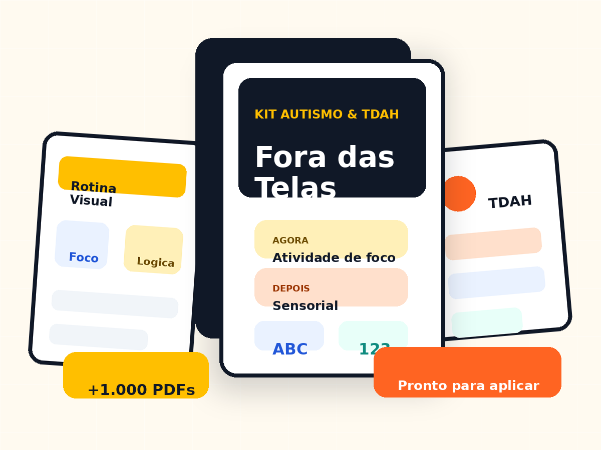

A criança fica presa no celular e você não sabe qual atividade oferecer no lugar.
TEA + TDAH | material digital pronto
Atividades prontas para tirar a criança da tela sem improvisar.
Receba um kit visual com +1.000 atividades, rotina, foco, emoções, coordenação e aprendizagem para aplicar em casa, na escola ou no atendimento.
Compra segura
Acesso imediato
Garantia 7 dias

Se você sente isso, o kit foi feito para você
O problema não é falta de amor. É falta de material pronto e direção.
Você começa uma atividade, mas em poucos minutos vem dispersão, resistência ou cansaço.
A escola ou a casa precisa de rotina visual, mas você não tem tempo para criar tudo do zero.
Você salva ideias, prints e PDFs soltos, mas na hora de aplicar fica perdido(a).
A virada
Em vez de procurar atividade todo dia, você abre o kit e aplica.
- Atividades organizadas por objetivo: foco, coordenação, emoções, letras, números e lógica.
- Materiais visuais para casa, escola e atendimentos, com linguagem simples e acolhedora.
- Estrutura pensada para reduzir improviso e facilitar uma rotina fora das telas.
Conteúdo completo
O que você vai receber dentro do Kit Autismo e TDAH Fora das Telas
Tudo em formato digital, pronto para baixar, imprimir e aplicar.
Manual
Método 15 Minutos
Aplicação rápida
Plano visual
Virada Sem Tela
Troca tela → atividade
Registro
Mapa da Evolução
Foco, rotina e progresso
Leia antes de deixar para depois
Se você continuar esperando “ter tempo”, a rotina continua no improviso.
O kit não promete diagnóstico, cura ou milagre. Ele entrega uma coisa que pais e professores realmente precisam: material visual, pronto e aplicável para começar hoje.
Quero parar de improvisarBônus de ação rápida
Presentes liberados hoje para deixar o kit mais completo
Método 15 Minutos Fora das Telas
Passo a passo para escolher e aplicar atividades em blocos curtos, sem sobrecarregar a criança.
Virada Sem Tela
Materiais visuais para ajudar na troca do celular por uma atividade com menos resistência.
Plano 7 Dias Sem Improviso
Uma semana guiada com sequência diária para casa ou escola.
Mapa da Evolução
Fichas simples para acompanhar foco, participação, humor, rotina e o que funcionou melhor.
Acesso imediato
Escolha o plano e receba o material no seu e-mail
Plano Essencial
Para começar com o material principal
R$19,90
- +1.000 atividades digitais
- Acesso vitalício
- Material para imprimir
- Suporte por e-mail
Mais escolhido
Plano Completo
Melhor para pais e professoras que querem o kit completo
De R$ 97,00 por
R$27,90
- Tudo do Plano Essencial
- Método 15 Minutos Fora das Telas
- Virada Sem Tela
- Plano 7 Dias Sem Improviso
- Mapa da Evolução
- Atualizações do material
Pagamento único. Acesso imediato. Garantia incondicional de 7 dias.
7 dias
Sem risco
Se não for útil para sua rotina, você pode pedir reembolso.
Você testa o material por 7 dias. Se perceber que não é para você, devolvemos 100% do valor conforme as regras da plataforma de pagamento.
Perguntas frequentes
Dúvidas comuns antes de comprar
Sim. Após a confirmação do pagamento, o acesso é enviado para o e-mail usado na compra.
Sim. O material foi organizado para apoiar rotina, foco, coordenação, emoções e aprendizagem de crianças com TEA, TDAH ou dificuldade de atenção.
O kit funciona melhor para crianças em fase infantil, especialmente entre 3 e 12 anos, adaptando a aplicação conforme a necessidade da criança.
Não. É um material pedagógico de apoio para rotina e atividades. Ele não substitui orientação médica, psicológica, terapêutica ou pedagógica individual.
Último passo